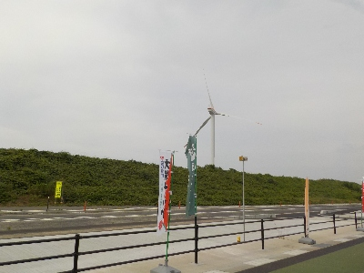

新しく出来た道の駅ほうじょうに行きました。
2025/06/08

鳥取県立美術館の帰りにお土産を買おうと思い、検索して見つけました。
新しい施設のせいかお客さんがとても多かったです。パンは売り切れだし、アイスクリームは行列が出来てて賑わってました。人気があるのはいいですね。
時間が経ってお客さんが空いたらパンやアイスを買いに行きたいと思いました。
あと、食堂で名物の長芋やカニ、カレーライス、大山鶏が食べれるみたい。スイカもお土産も買えるので、ここである程度完結しそうですね。